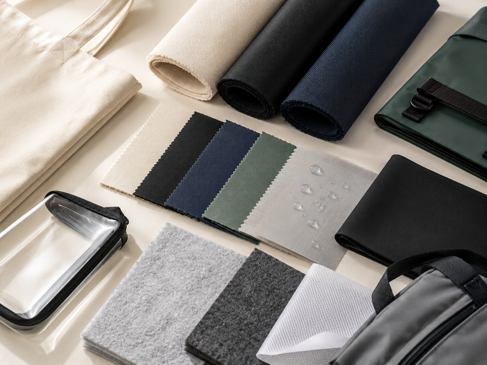
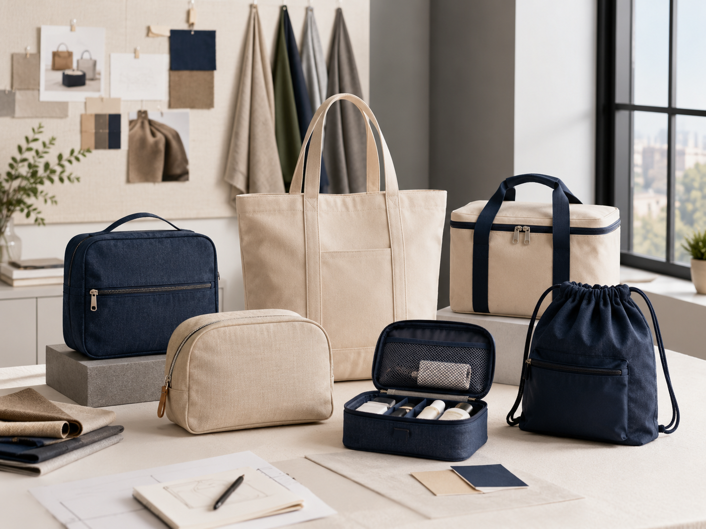

Natural, reusable and suitable for tote bags, gift bags and lifestyle pouches.
Material Compare
Canvas Vs Nylon Vs Oxford Bags
Canvas, nylon and Oxford are common custom bag materials, but they serve different product goals. This guide helps buyers compare them by appearance, function and application.

Lightweight, smooth and suitable for travel, sports and organizer products.
Structured, durable and practical for cooler, outdoor and utility bags.
Choose by bag category, buyer market, logo method and expected use.
01
Canvas: Natural And Reusable
Canvas is often selected when buyers want a natural textile look, reusable positioning or a lifestyle product feel.
- Suitable for tote bags, cosmetic pouches, gift bags and casual retail products.
- Works well with printing, embroidery and woven labels.
- Thickness affects structure, cost and perceived quality.
- May need lining or coating if water resistance is required.
02
Nylon: Lightweight And Smooth
Nylon is practical for buyers who want lightweight bags with a smoother or more technical hand feel.
- Suitable for travel organizers, sports bags, compact pouches and drawstring bags.
- Often used when low weight and foldability matter.
- Can support functional styles with lining, mesh, zipper and webbing.
- Logo method should be tested because surface finish may vary.
03
Oxford: Durable And Structured
Oxford fabric is widely used for bags that need durability, shape and practical function.
- Suitable for cooler bags, outdoor bags, sports bags and utility-style projects.
- Works well with lining, insulation, reinforced handles and pockets.
- Often selected for cost-effective durability.
- Different deniers and coatings create different final effects.
04
How Buyers Should Choose
Do not choose fabric by name only. Compare the final bag application, target price, desired appearance and logo effect.
- Choose canvas for natural retail appeal.
- Choose nylon for lightweight travel and sports applications.
- Choose Oxford for durable or structured functional bags.
- Confirm the final choice by sample review before bulk production.
Material Comparison
Compare The Final Bag, Not Just The Fabric
A material decision should be based on how the finished bag looks, feels, carries and performs in its target market.
- Appearance and texture
- Weight and structure
- Durability and use case
- Logo and packing compatibility

Buyer Checklist
Quick Material Decision Guide
Use this comparison to choose a more suitable fabric direction before requesting samples.
Best for natural, reusable, lifestyle and gift-oriented bags.
Best for lightweight, foldable, travel and sports-related products.
Best for durable, structured, cooler and utility-style bags.
Need Project Support?
Need Help Choosing Between Canvas, Nylon And Oxford?
Tell us your bag type, target buyer, expected price level and logo method. We can suggest a practical fabric direction.